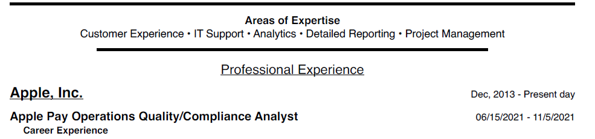

Proffesional Experience
With eight years of experience in a variety of rules at a world class fortune 100 company, and the excellent project-management and business analysis skills I have, I should be an great candidate for most roles. I am always looking for the next opportunity to challenge me and if you have a role worth seeking, please reach out to me so I can hear more about it.
Here are some points from my resume. Due to the nature of some of the roles I have been in, I will not be able to provide all of the information on this site. If you would like to see more details, please use the contact link to reach out to me.
- Identified, documented, and resolved complex workflows to reflect an accurate process that can be read easily by others.
- Showed development of data modeling and logical/physical topology skills with in reporting issues.
- Supported a project designed to maintain and update digital and physical assets.
- Investigated and reported on intricate support cases to help prevent fraud.
- Monitored daily work-lists while tracking and reporting system issues that could affect customer satisfaction or department production.
- Constructed tool enhancements to improve overall handle time of intensive bulk processing cases.
- Designed automation scripts to help with processing visualization to improve resolution accuracy.
- Developed data reporting with root cause analysis regarding Advisor performance and tool development.
- Project Lead for the development of an international social media customer support system.
- Demonstrated in-depth knowledge of Excel, Tableau and other internal tools for data management and performance analytics.